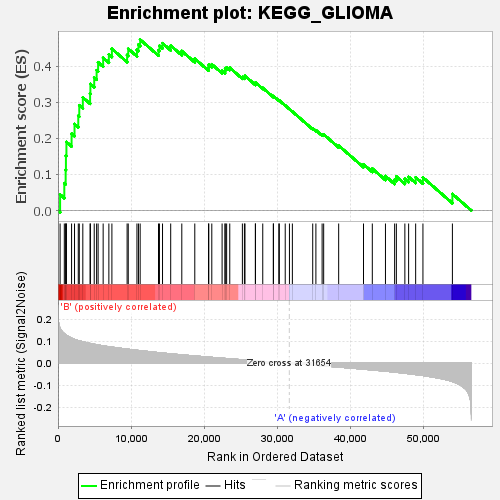
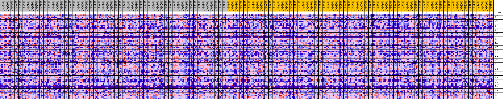
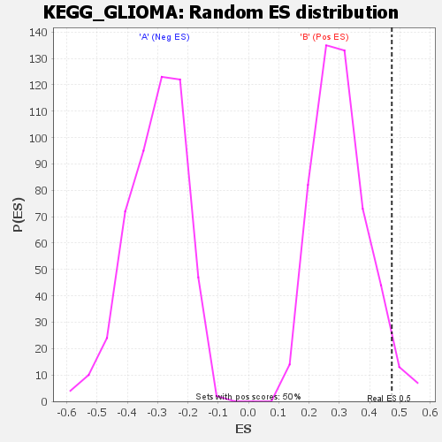

| | | Dataset | my.my.cls#B_versus_A.my.cls#B_versus_A_repos |
| Phenotype | my.cls#B_versus_A_repos |
| Upregulated in class | B |
| GeneSet | KEGG_GLIOMA |
| Enrichment Score (ES) | 0.47328907 |
| Normalized Enrichment Score (NES) | 1.5626373 |
| Nominal p-value | 0.027944112 |
| FDR q-value | 0.7257163 |
| FWER p-Value | 0.685 |
Table: GSEA Results Summary

Fig 1: Enrichment plot: KEGG_GLIOMA
Profile of the Running ES Score & Positions of GeneSet Members on the Rank Ordered List
| SYMBOL | TITLE | RANK IN GENE LIST | RANK METRIC SCORE | RUNNING ES | CORE ENRICHMENT | | 1 | PLCG1 | na | 287 | 0.159 | 0.0444 | Yes |
| 2 | AKT2 | na | 864 | 0.133 | 0.0757 | Yes |
| 3 | E2F1 | na | 1048 | 0.129 | 0.1126 | Yes |
| 4 | SHC3 | na | 1085 | 0.128 | 0.1519 | Yes |
| 5 | PDGFB | na | 1154 | 0.126 | 0.1900 | Yes |
| 6 | CAMK2A | na | 1860 | 0.113 | 0.2128 | Yes |
| 7 | CDK4 | na | 2264 | 0.108 | 0.2394 | Yes |
| 8 | PIK3R1 | na | 2777 | 0.103 | 0.2623 | Yes |
| 9 | SHC4 | na | 2915 | 0.101 | 0.2915 | Yes |
| 10 | SHC2 | na | 3400 | 0.097 | 0.3132 | Yes |
| 11 | CAMK2B | na | 4397 | 0.090 | 0.3235 | Yes |
| 12 | CALM2 | na | 4437 | 0.089 | 0.3506 | Yes |
| 13 | SHC1 | na | 4962 | 0.086 | 0.3681 | Yes |
| 14 | MAPK1 | na | 5290 | 0.084 | 0.3884 | Yes |
| 15 | PDGFRB | na | 5494 | 0.083 | 0.4106 | Yes |
| 16 | E2F3 | na | 6185 | 0.079 | 0.4230 | Yes |
| 17 | AKT3 | na | 6968 | 0.075 | 0.4325 | Yes |
| 18 | CALML5 | na | 7383 | 0.073 | 0.4479 | Yes |
| 19 | RAF1 | na | 9467 | 0.064 | 0.4310 | Yes |
| 20 | ARAF | na | 9623 | 0.063 | 0.4480 | Yes |
| 21 | PDGFA | na | 10814 | 0.059 | 0.4452 | Yes |
| 22 | GRB2 | na | 11019 | 0.058 | 0.4597 | Yes |
| 23 | CCND1 | na | 11255 | 0.057 | 0.4733 | Yes |
| 24 | PIK3R5 | na | 13767 | 0.048 | 0.4438 | No |
| 25 | PRKCA | na | 13897 | 0.047 | 0.4564 | No |
| 26 | CALML6 | na | 14318 | 0.046 | 0.4633 | No |
| 27 | CALM3 | na | 15438 | 0.043 | 0.4568 | No |
| 28 | MAP2K1 | na | 16959 | 0.038 | 0.4417 | No |
| 29 | CDKN2A | na | 18738 | 0.033 | 0.4206 | No |
| 30 | PDGFRA | na | 20618 | 0.028 | 0.3960 | No |
| 31 | CDK6 | na | 20659 | 0.028 | 0.4040 | No |
| 32 | PIK3CG | na | 21068 | 0.027 | 0.4051 | No |
| 33 | PIK3R3 | na | 22479 | 0.023 | 0.3873 | No |
| 34 | PTEN | na | 22874 | 0.022 | 0.3872 | No |
| 35 | PLCG2 | na | 22904 | 0.022 | 0.3934 | No |
| 36 | TP53 | na | 23100 | 0.021 | 0.3966 | No |
| 37 | PRKCG | na | 23529 | 0.020 | 0.3954 | No |
| 38 | E2F2 | na | 25257 | 0.016 | 0.3698 | No |
| 39 | MDM2 | na | 25536 | 0.015 | 0.3696 | No |
| 40 | SOS1 | na | 25614 | 0.015 | 0.3729 | No |
| 41 | RB1 | na | 27035 | 0.011 | 0.3513 | No |
| 42 | MAP2K2 | na | 27050 | 0.011 | 0.3545 | No |
| 43 | PIK3CB | na | 28048 | 0.009 | 0.3396 | No |
| 44 | EGFR | na | 29493 | 0.005 | 0.3157 | No |
| 45 | TGFA | na | 29518 | 0.005 | 0.3169 | No |
| 46 | BRAF | na | 30251 | 0.003 | 0.3050 | No |
| 47 | PIK3CD | na | 30315 | 0.003 | 0.3049 | No |
| 48 | HRAS | na | 31126 | 0.001 | 0.2910 | No |
| 49 | CALM1 | na | 31704 | -0.000 | 0.2808 | No |
| 50 | CAMK2G | na | 32105 | -0.001 | 0.2741 | No |
| 51 | PRKCB | na | 34892 | -0.008 | 0.2273 | No |
| 52 | IGF1 | na | 35328 | -0.009 | 0.2225 | No |
| 53 | PIK3R2 | na | 36180 | -0.011 | 0.2109 | No |
| 54 | PIK3CA | na | 36393 | -0.012 | 0.2109 | No |
| 55 | KRAS | na | 38448 | -0.017 | 0.1799 | No |
| 56 | CALML3 | na | 41850 | -0.027 | 0.1281 | No |
| 57 | EGF | na | 43055 | -0.030 | 0.1162 | No |
| 58 | NRAS | na | 44857 | -0.036 | 0.0954 | No |
| 59 | CDKN1A | na | 46114 | -0.040 | 0.0856 | No |
| 60 | IGF1R | na | 46349 | -0.041 | 0.0942 | No |
| 61 | MAPK3 | na | 47515 | -0.045 | 0.0876 | No |
| 62 | MTOR | na | 48030 | -0.047 | 0.0931 | No |
| 63 | AKT1 | na | 48994 | -0.051 | 0.0919 | No |
| 64 | SOS2 | na | 49991 | -0.055 | 0.0915 | No |
| 65 | CAMK2D | na | 54027 | -0.082 | 0.0459 | No |
Table: GSEA details [plain text format]

Fig 2: KEGG_GLIOMA
Blue-Pink O' Gram in the Space of the Analyzed GeneSet

Fig 3: KEGG_GLIOMA: Random ES distribution
Gene set null distribution of ES for KEGG_GLIOMA